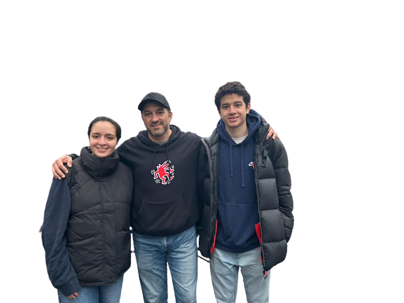
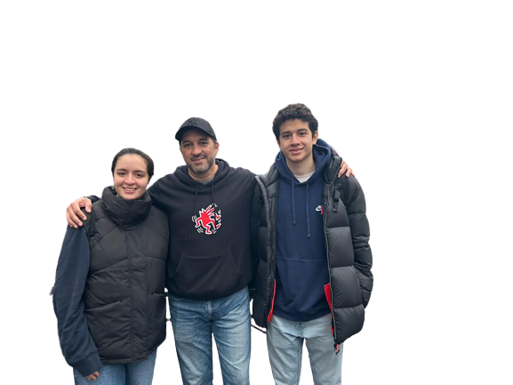

A propos de moi.
Je m'appelle César Archila, j'ai 19 ans et je suis en France depuis cette année. En effet, je suis pas francais, je viens de l'Amérique Latine, plus précisement je viens du Salvador, un petit pays en Amérique Centrale qui se trouve proche du Méxique. Je suis en France parce que depuis que je suis petit, j'ai réalisé mes études dans un lycée francais au Salvador. Grace au lycée, j'ai pu soumettre ma candidature dans plusieurs universités en France.
J'ai opté pour une formation en France parce que contrairement a mon pays d'origine, en France on peut trouver beaucoup plus d'opportunités. De plus, le niveau académique est bien supérieur.
En ce qui concerne mes centres d'intérets, j'aime bien l'informatique, j'aime bien apprendre le fonctionnement et toute la science qui se trouve dérriere des pages webs et de l'informatique. En outre, j'aime bien faire du sport; je fais du sport depuis que j'ai 5 ans, j'ai fait du motocross pendant 10 ans mais aussi je fais du football et de la gimnastic. Finalement, j'aime bien passer du temps avec mes amis et ma copine.
Mes Projets

Installation d'un post pour le developpement.

Creation d'une base de données

Creation d'un site internet pour une ESN
Développement d'un programme de classification automatique de depéches
Installation de services réseaux
Exploitation d'une base de données
Conception et Développement d'un logiciel de gestion d'évènement
Formation
Un bref résumé de ma formation, des langues que je parle couramment et de mes expériences professionnelles.